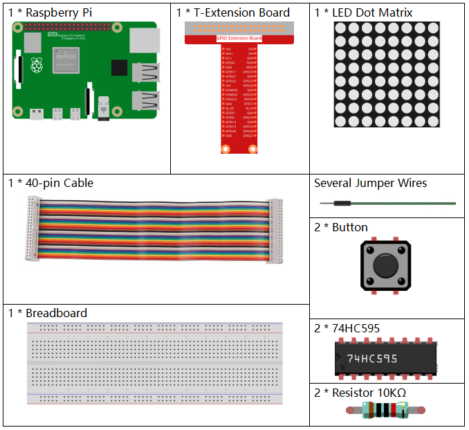
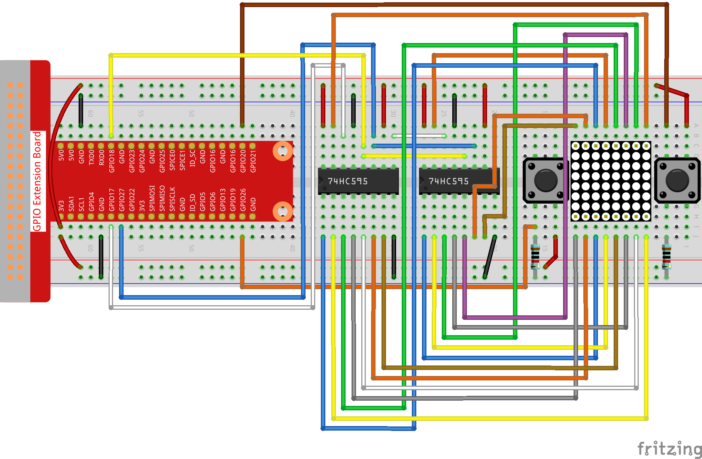

Nota
Ciao, benvenuto nella Community SunFounder per appassionati di Raspberry Pi, Arduino e ESP32 su Facebook! Approfondisci l’uso di Raspberry Pi, Arduino e ESP32 insieme ad altri entusiasti.
Perché Unirsi?
Supporto Esperto: Risolvi problemi post-vendita e sfide tecniche con l’aiuto della nostra community e del nostro team.
Impara e Condividi: Scambia consigli e tutorial per migliorare le tue competenze.
Anteprime Esclusive: Ottieni accesso anticipato agli annunci di nuovi prodotti e anteprime.
Sconti Speciali: Approfitta di sconti esclusivi sui nostri prodotti più recenti.
Promozioni Festive e Omaggi: Partecipa a promozioni e omaggi durante le festività .
👉 Pronto per esplorare e creare con noi? Clicca [Qui] e unisciti oggi stesso!
3.1.14 GIOCO – Not Not
Introduzione
In questa lezione realizzeremo un dispositivo per un gioco interessante, che chiamiamo «Not Not».
Durante il gioco, la matrice di punti genererà casualmente una freccia. Il tuo obiettivo è premere il pulsante nella direzione opposta alla freccia entro un tempo limitato. Se il tempo scade, o se premi il pulsante nella stessa direzione della freccia, perdi la partita.
Questo gioco è un ottimo esercizio per allenare il pensiero inverso. Sei pronto a provare?
Componenti
Schema Circuitale
T-Board Name |
physical |
wiringPi |
BCM |
GPIO17 |
Pin 11 |
0 |
17 |
GPIO18 |
Pin 12 |
1 |
18 |
GPIO27 |
Pin 13 |
2 |
27 |
GPIO20 |
Pin 38 |
28 |
20 |
GPIO26 |
Pin 37 |
25 |
26 |

Procedura Sperimentale
Step 1: Costruisci il circuito.
{kind=link}
Step 2: Vai nella cartella del codice.
cd ~/davinci-kit-for-raspberry-pi/c/3.1.14/
Step 3: Compila.
gcc 3.1.14_GAME_NotNot.c -lwiringPi
Step 4: Esegui.
sudo ./a.out
All’avvio del programma, una freccia a sinistra o a destra apparirà casualmente sulla matrice di punti. Devi premere il pulsante nella direzione opposta alla freccia entro il tempo stabilito. Se ci riesci, apparirà un "√" sulla matrice di punti. Se invece il tempo scade o premi il pulsante nella stessa direzione della freccia, perdi e sulla matrice di punti verrà visualizzato "x". Puoi aggiungere due nuovi pulsanti o sostituirli con i tasti del Joystick per le direzioni su, giù, sinistra e destra – aumentando così la difficoltà del gioco.
Nota
Se il programma non funziona dopo l’avvio o compare un messaggio di errore come "wiringPi.h: File o directory inesistente", consulta Il codice C non funziona?.
Spiegazione del Codice
Basandosi su 1.1.6 Matrice LED, questa lezione aggiunge 2 pulsanti per creare un dispositivo di gioco divertente. Se non hai familiarità con la matrice a punti, consulta 1.1.6 Matrice di LED.
L’intero processo del programma è il seguente:
Seleziona casualmente la direzione di una freccia e genera il timer 1.
Visualizza l’immagine della freccia sulla matrice di punti.
Verifica l’input del pulsante. Se viene premuto un pulsante o timer 1 segnala lo scadere del tempo, inizia la valutazione.
Visualizza l’immagine in base al risultato della valutazione; nel frattempo, genera timer 2.
Ripeti passo 1 quando timer 2 segnala lo scadere del tempo.
struct GLYPH{
    char *word;
    unsigned char code[8];
};
struct GLYPH arrow[2]=
{
    {"right",{0xFF,0xEF,0xDF,0x81,0xDF,0xEF,0xFF,0xFF}},
    // {"down",{0xFF,0xEF,0xC7,0xAB,0xEF,0xEF,0xEF,0xFF}},
    // {"up",{0xFF,0xEF,0xEF,0xEF,0xAB,0xC7,0xEF,0xFF}},
    {"left",{0xFF,0xF7,0xFB,0x81,0xFB,0xF7,0xFF,0xFF}}
};
struct GLYPH check[2]=
{
    {"wrong",{0xFF,0xBB,0xD7,0xEF,0xD7,0xBB,0xFF,0xFF}},
    {"right",{0xFF,0xFF,0xF7,0xEB,0xDF,0xBF,0xFF,0xFF}}
};
La struttura GLYPH funziona come un dizionario: l’attributo word corrisponde alla chiave del dizionario, mentre l’attributo code corrisponde al valore.
Qui, code viene utilizzato per memorizzare un array per la matrice LED al fine di visualizzare immagini (un array a 8 bit x 8 bit).
L’array arrow può essere utilizzato per visualizzare le frecce in direzioni verso l’alto, il basso, sinistra e destra sulla matrice LED.
Attualmente, le frecce per down e up sono commentate; rimuovi i commenti se necessario.
L’array check viene utilizzato per visualizzare le seguenti immagini: "×" e "√".
char *lookup(char *key,struct GLYPH *glyph,int length){
    for (int i=0;i<length;i++)
    {
        if(strcmp(glyph[i].word,key)==0){
            return glyph[i].code;
        }
    }
}
La funzione lookup() cerca una chiave key nella struttura GLYPH *glyph e restituisce l’array code corrispondente.
La funzione Strcmp() confronta due stringhe di caratteri glyph[i].word e key; se sono identiche, restituisce glyph[i].code.
void display(char *glyphCode){
    for(int i;i<8;i++){
        hc595_in(glyphCode[i]);
        hc595_in(0x80>>i);
        hc595_out();
    }
}
Visualizza il pattern specificato sulla matrice di punti.
void createGlyph(){
    srand(time(NULL));
    int i=rand()%(sizeof(arrow)/sizeof(arrow[0]));
    waypoint=arrow[i].word;
    stage="PLAY";
    alarm(2);
}
La funzione createGlyph() viene utilizzata per selezionare casualmente una direzione (l’attributo «word» di un elemento nell’array arrow[]: "left", "right"…). Imposta lo stato su "PLAY" e avvia una funzione di allarme di 2 secondi.
srand(time(NULL))： Inizializza i semi casuali derivanti dall’orologio di sistema.
(sizeof(arrow)/sizeof(arrow[0]))： Ottiene la lunghezza dell’array, il risultato è 2.
rand()%2: Calcola il resto, che sarà 0 o 1, ottenuto dividendo un numero casuale generato per 2.
waypoint=arrow[i].word: Il risultato dovrebbe essere "right" o "left".
void checkPoint(char *inputKey){
    alarm(0)==0;
    if(inputKey==waypoint||inputKey=="empty")
    {
        waypoint="wrong";
    }
    else{
        waypoint="right";
    }
    stage="CHECK";
    alarm(1);
}
La funzione checkPoint() viene utilizzata per verificare l’input del pulsante; se il pulsante non viene premuto o viene premuto nella stessa direzione della freccia, il risultato del waypoint sarà «sbagliato» e apparirà una "x" sulla matrice a punti. Al contrario, se il waypoint è corretto, la matrice mostrerà il simbolo "√". In questo caso, lo stato è impostato su CHECK, e può essere impostata una funzione di allarme di 1 secondo.
La funzione alarm(), chiamata anche "allarme", consente di impostare un timer che invia segnali SIGALRM al processo una volta scaduto il tempo definito.
void getKey(){
    if (digitalRead(AButtonPin)==1&&digitalRead(BButtonPin)==0)
    {checkPoint("right");}
    else if (digitalRead(AButtonPin)==0&&digitalRead(BButtonPin)==1)
    {checkPoint("left");}
}
getKey() legge gli stati dei due pulsanti; se è premuto il pulsante destro, il parametro per checkPoint() è «destra»; se è premuto quello sinistro, il parametro è «sinistra».
void timer(){
    if (stage=="PLAY"){
        checkPoint("empty");
    }
    else if(stage=="CHECK"){
        createGlyph();
    }
}
Quando il timer() scade, sotto lo stato «GIOCO», viene chiamato checkPoint() per la verifica. Se il programma è impostato su «VERIFICA», chiama createGlyph() per una nuova freccia.
void main(){
    setup();
    signal(SIGALRM,timer);
    createGlyph();
    char *code = NULL;
    while(1){
        if (stage == "PLAY")
        {
            code=lookup(waypoint,arrow,sizeof(arrow)/sizeof(arrow[0]));
            display(code);
            getKey();
        }
        else if(stage == "CHECK")
        {
            code = lookup(waypoint,check,sizeof(check)/sizeof(check[0]));
            display(code);
        }
    }
}
signal(SIGALRM, timer): Chiama timer() quando riceve un segnale SIGALRM generato dal timer alarm().
All’avvio del programma, createGlyph() viene chiamato una volta, quindi inizia il loop.
Nel loop: in modalità GIOCO, la matrice di punti mostra le frecce e controlla lo stato dei pulsanti; in modalità VERIFICA, mostra «x» o «√».